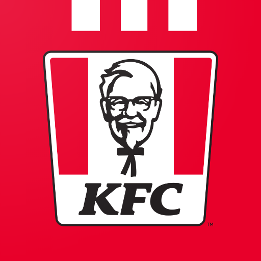

KFC is an American fast food restaurant chain headquartered in Louisville, Kentucky, that specializes in fried chicken. It is the world's second-largest restaurant chain (as measured by sales) after McDonald's, with 22,621 locations globally in 150 countries as of December 2019. The chain is a subsidiary of Yum! Brands, a restaurant company that also owns the Pizza Hut and Taco Bell chains.
